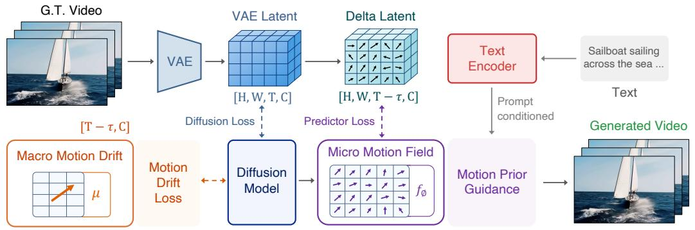
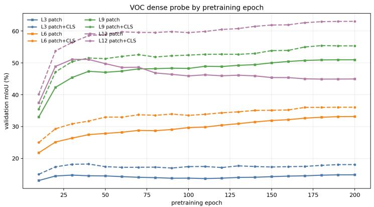
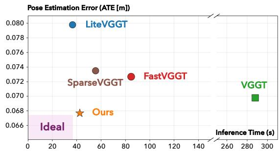
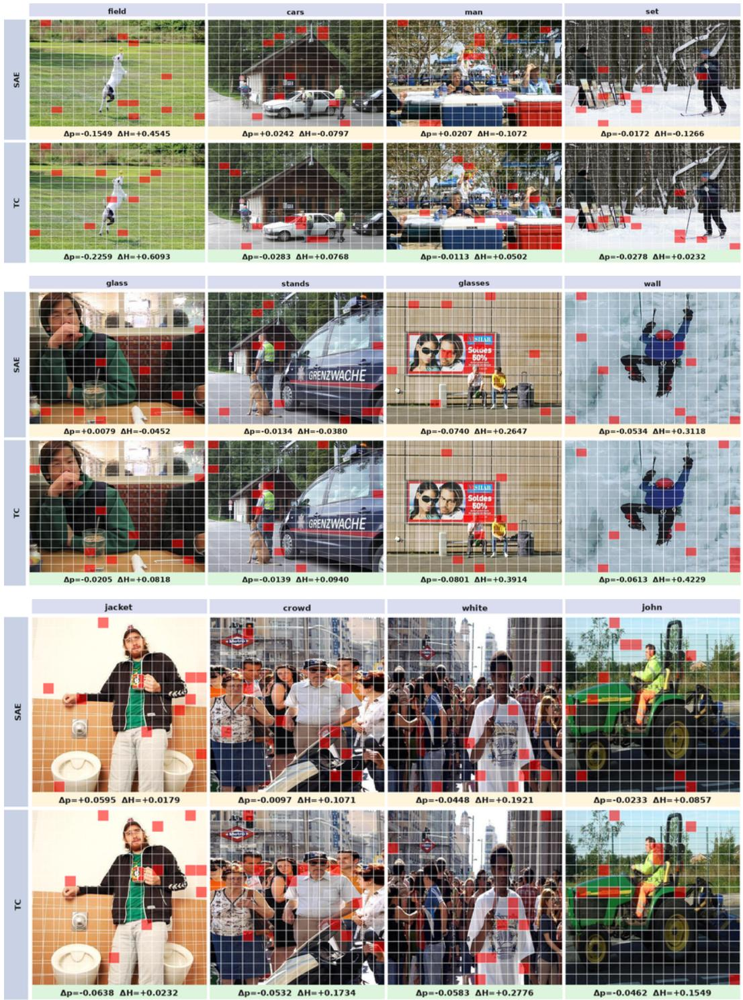
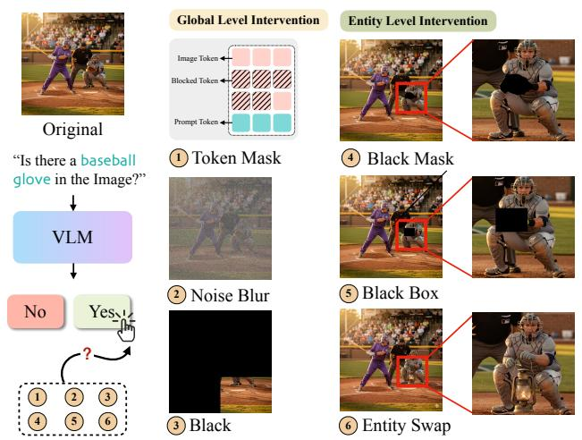
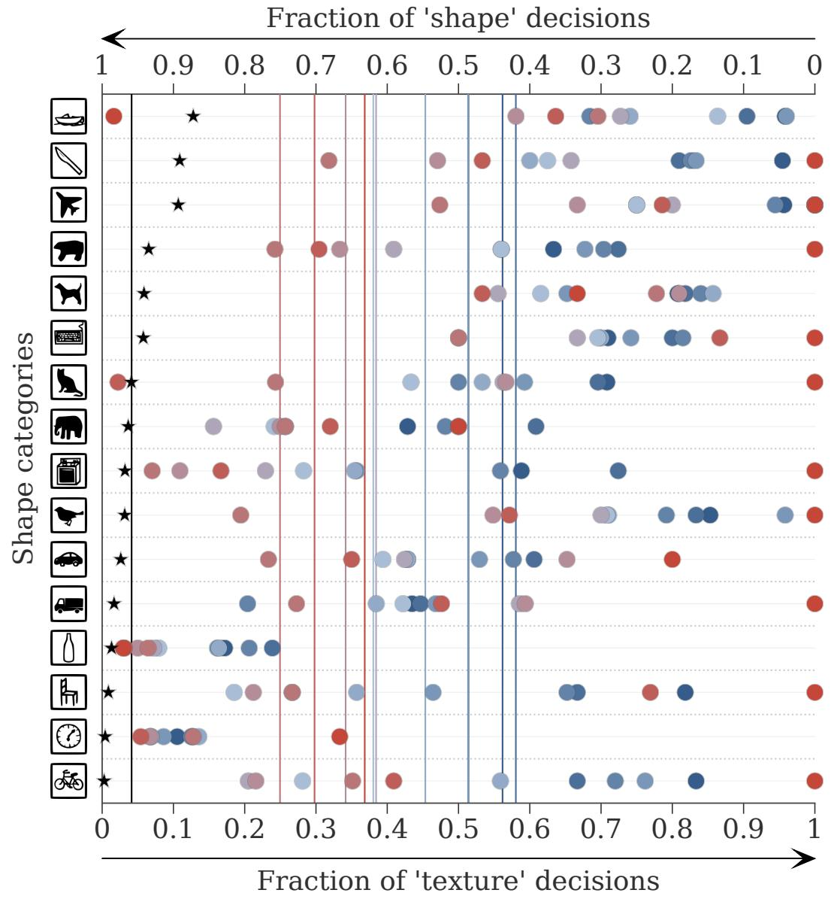
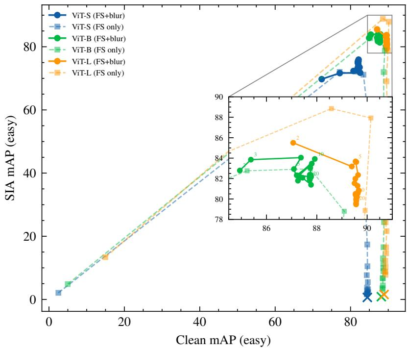
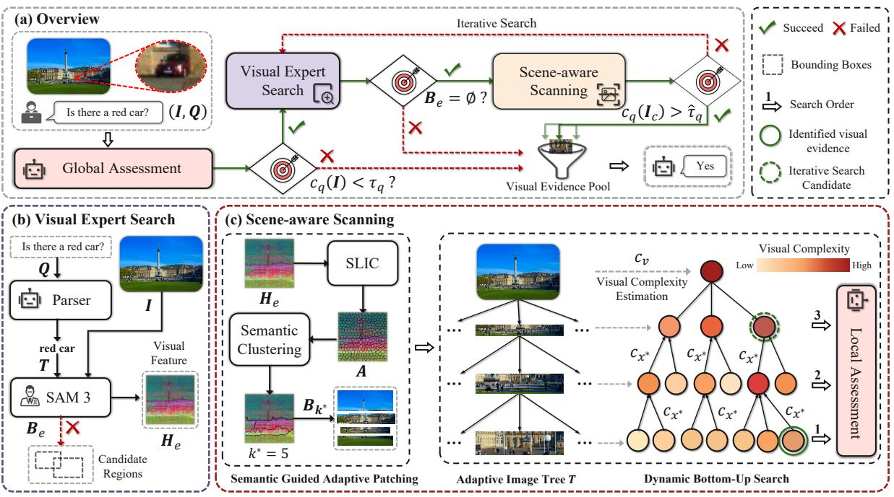

Daily issue · 2026-05-26 · CCF A/B 会议优先
5 月 26 日：The TIME Machine 等视觉表征论文归档
本页按日期归档近期论文，保留优先级、主题、来源与方法线索，方便回看同一批工作的研究脉络。
先读 The TIME Machine。以点轨迹作为遮蔽和重建对象，把运动连续性变成视频预训练信号。 其余论文按 P1/P2 与主题顺序扫读，重点看方法图、消融设置和是否能迁移到通用视觉表征。
论文索引
 P1
P1
2026-05-26 · arXiv 新增 · arXiv 新增
高相关；详见方法、贡献和实验边界。
方法：以点轨迹作为遮蔽和重建对象，把运动连续性变成视频预训练信号

P1
2026-05-26 · arXiv 新增 / 项目页 · arXiv 新增 / 项目页
高相关；详见方法、贡献和实验边界。
方法：从无标注视频 latent change 中学习 motion prior，可迁移到视频预训练和世界模型

P1
2026-05-26 · arXiv 新增 · arXiv 新增
中高相关；详见方法、贡献和实验边界。
方法：分析 DINO ViT 的 dense degradation，并用选择性 token mixing 提升密集预测

P2
2026-05-26 · arXiv 新增 / 项目页 · arXiv 新增 / 项目页
中高相关；详见方法、贡献和实验边界。
方法：视觉几何 Transformer 的 token 选择策略，对多视图/3D foundation model 效率有参考

P2
2026-05-26 · arXiv 新增 · arXiv 新增
中高相关；详见方法、贡献和实验边界。
方法：用 transcoder 追踪 VLM 中从图像 patch 到文本 token 的计算通路

P2
2026-05-26 · CVPR 2026 Workshop · arXiv + CVPR 2026 Workshop
中高相关；详见方法、贡献和实验边界。
方法：检验 VLM benchmark 是否真的依赖视觉证据，是视觉-语言表示评估的好诊断
 P2
P2
2026-05-26 · arXiv 新增 / ICML 列表出现 · arXiv 新增 / ICML 列表出现
中相关；详见方法、贡献和实验边界。
方法：用程序生成几何任务补 dense grounding supervision，适合扫读数据构造思路

P2
2026-05-26 · arXiv 新增 · arXiv 新增
中相关；详见方法、贡献和实验边界。
方法：固定架构下比较生成式/判别式目标，对 SSL 目标函数取舍有启发

P3
2026-05-26 · ICIP 2026 · arXiv + ICIP 2026
中相关；详见方法、贡献和实验边界。
方法：冻结 DINOv2/PaliGemma 上的鲁棒性防御，属于 VFM 使用边界

P3
2026-05-26 · ICML 2026 · arXiv + ICML 2026
中相关；详见方法、贡献和实验边界。
方法：高分辨率 MLLM 的 adaptive visual search，偏推理系统但提示 token/patch 搜索趋势